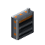
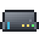
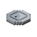
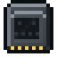
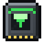
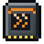
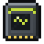
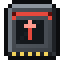

Reference: pages
Reference
Wireless Egress Port

encodedlogistics:wireless_egress_port · Block · Stacks to 64 · Creative tab: Encoded Logistics
An Egress Port with no cable: place it against an inventory and link it to a Wireless Controller with a Link Card. It takes the same modules and settings as the cabled port.
Wireless Egress Port
Shift: An Egress Port with no cable: mount it on an inventory and link it to a Wireless Controller with a Link Card.
Works with

Wireless Controller
Access Point
Link Card
Filter Module
Throughput Module
Fuzzy Match Module
Redstone Control Module
On a network
It counts as a device of type WEGRESS in Work with Devices and in ELCL; the first one on a network is named WEGRESS01. See Device types.
How to get it
encodedlogistics:wireless_egress_port
Used to make
Nothing.
As a block
| Hardness | 1.5 |
|---|---|
| Blast resistance | 6 |
| Tool | any pickaxe (needed for it to drop) |
| Light level | 0 in its default state |
Where it's documented
- Wireless (Networking)
- Cable parts (Networks)